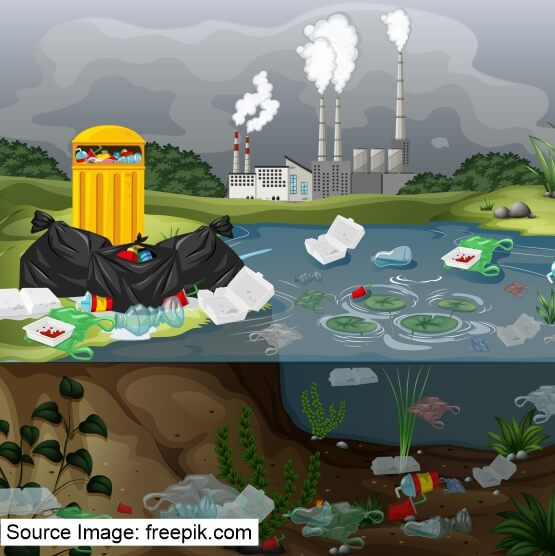
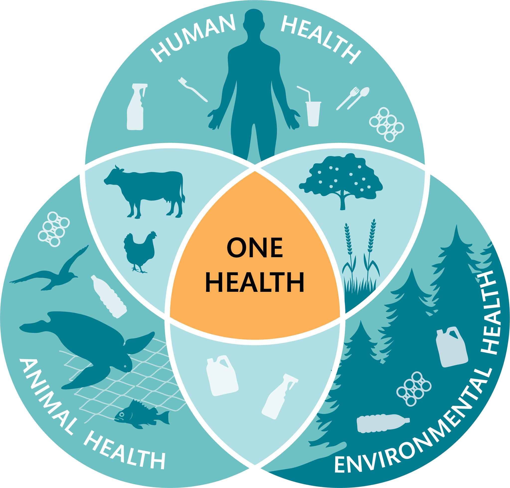
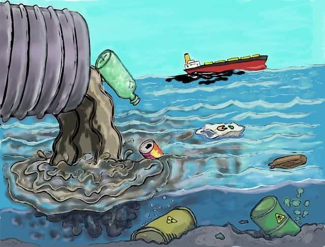

Introduction to Toxic Chemicals
The toxicity of a substance is its ability to cause harmful effects. These effects can strike a single cell, a group of cells, an organ system, or the entire body. A toxic effect may be visible damage, or a decrease in performance or function measurable only by a test. All chemicals can cause harm. When only a very large amount of the chemical can cause damage, the chemical is considered to be practically non-toxic. When a tiny amount is harmful, the chemical is considered to be highly toxic.
What are Toxic Chemicals and Why Do They Matter?
Toxic chemicals are substances that can cause harm to living organisms through chemical interactions. They may be naturally occurring or synthetic and are found in various forms such as solids, liquids, or gases. A toxic chemical may cause acute effects, chronic effects, or both. For example, if you inhale high levels of solvents on the job, you may experience acute effects such as headaches and dizziness which go away at the end of the day. Over months, you may begin to develop chronic effects such as liver and kidney damage.
Example of Toxic Chemical Pollution
Above: A river contaminated with chemical waste from industrial factories.Toxic, or hazardous, air pollutants are substances that cause or are suspected of causing cancer, birth defects, or other serious harms. They can be gases, such as hydrogen chloride,cadmium, mercury and chromium.
Toxic Chemical Pollution vs Clean Environments
Happens when harmful chemicals are released into the air, water, or soil. Leads to problems like: Poisoned drinking water Air pollution causing diseases Making food unsafe to eat Loss of wildlife and plant life
Impacts of Health issues
Recycling plastics can even increase the concentration of these toxic chemicals, making it both an ineffective and dangerous solution. Chemicals in plastics have been linked to a range of serious health issues including cancers, reproductive disorders, metabolic changes, obesity, premature birth, early puberty, respiratory problems, diabetes, heart disease, and learning disabilities.
Life cycle of plastic
The plastics life cycle includes extraction of raw materials; design and production; packaging and distribution; use and maintenance; and recycling, reuse, recovery or final disposal. After plastic items have been consumed or used, these items may follow several different routes. Some are collected and sorted through formal or informal waste management schemes or by manufacturers.
Our choices can help clean up the ocean – and make it a safe place for marine life!
Try using reusable water bottles, multi-use shopping bags, and pick loose fruit and veg instead of plastic-wrapped food. And remember to recycle all the plastic that you can!
You can also support local clean-up events and encourage others to reduce plastic use at school or in your community. Choose biodegradable or compostable products whenever possible, and avoid single-use plastics like straws and cutlery. Every small change counts – together, we can protect our oceans for future generations.